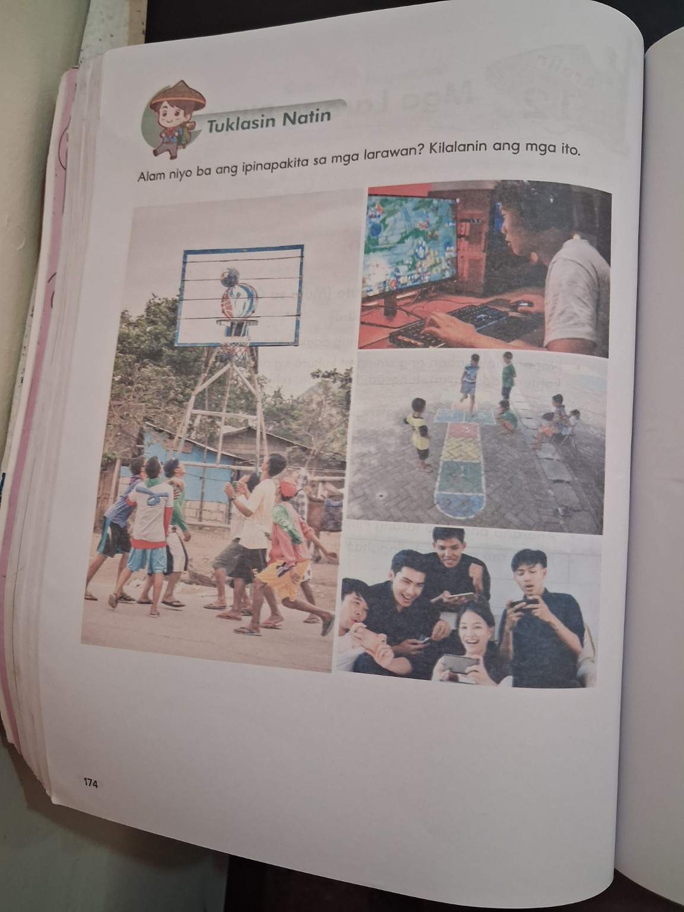
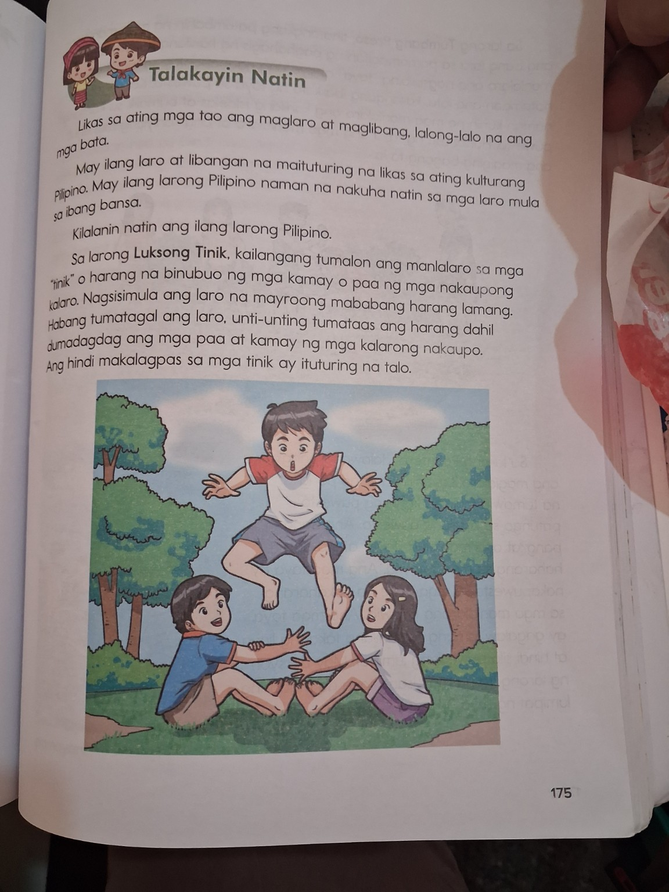
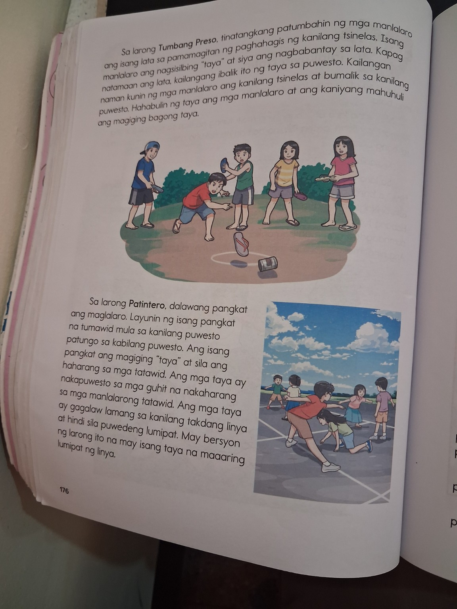
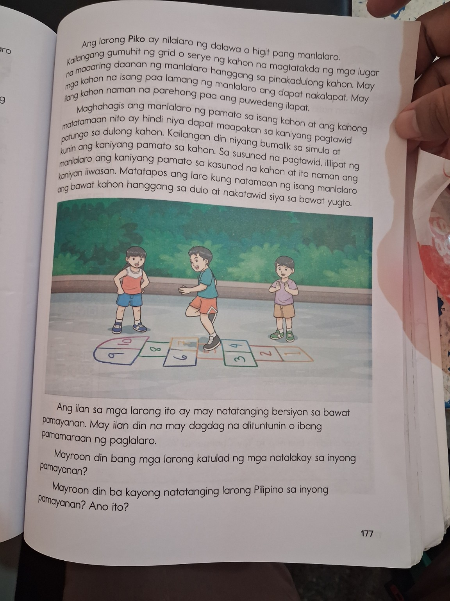

Ano ang larong Pilipino?
Ang mga larong Pilipino ay mga larong likas sa ating kultura o nagmula sa ibang bansa.
Filipino games are games that are part of our culture or games adopted from other countries.

Kilalanin ang mga larong bahagi ng kulturang Pilipino—at alamin kung bakit mahalagang pahalagahan at ipagpatuloy ang mga ito.
English Support: Discover Filipino games, their basic ways of playing, and why these games are worth appreciating and preserving.
Anong laro ang inilalarawan?
Tanong: Ano ang paborito mong laro kasama ang iyong mga kaibigan? May laro ba sa inyong pamayanan na katulad ng mga larong Pilipino?
English Support: What game do you enjoy with friends? Is there a game in your community that is similar to a Filipino traditional game?

Larawan mula sa ibinigay na lesson source • p. 174I-tap ang bawat card. Hanapin ang mahalagang clue sa paraan ng paglalaro.



📖 Mga larawan mula sa lesson source, pp. 175–177Ang mga larong Pilipino ay mga larong likas sa ating kultura o nagmula sa ibang bansa.
Filipino games are games that are part of our culture or games adopted from other countries.
May iba’t ibang bersiyon ng mga larong Pilipino sa iba’t ibang pamayanan sa Pilipinas.
A Filipino game may have different versions in different communities.
Ang pagkilala at pagpapahalaga sa mga laro ay tumutulong sa atin na pahalagahan ang sining at kultura ng komunidad.
Appreciating games helps us value the art and culture of our communities.
Kung pareho ang pangalan ng isang laro ngunit iba ang paraan ng paglalaro sa dalawang pamayanan, masasabi pa rin ba nating parehong laro ito?
Pumili ng isang paraan kung paano mo maipapakita na pinahahalagahan mo ang larong Pilipino.
May apat na clue. Iugnay ang bawat clue sa tamang laro. Kailangan mong makakuha ng 4/4 upang ma-unlock ang badge.
Kumpletuhin sa isip o sabihin sa klase:
English Support: “Today I learned that Filipino games are ____________. I can value them by ____________.”
Gaano ka kahanda?
Natapos mo ang interactive lesson tungkol sa Mga Larong Pilipino.
“Ang mga larong Pilipino ay bahagi ng ating kultura. Kilalanin, pahalagahan, at ipagpatuloy ang mga ito.”